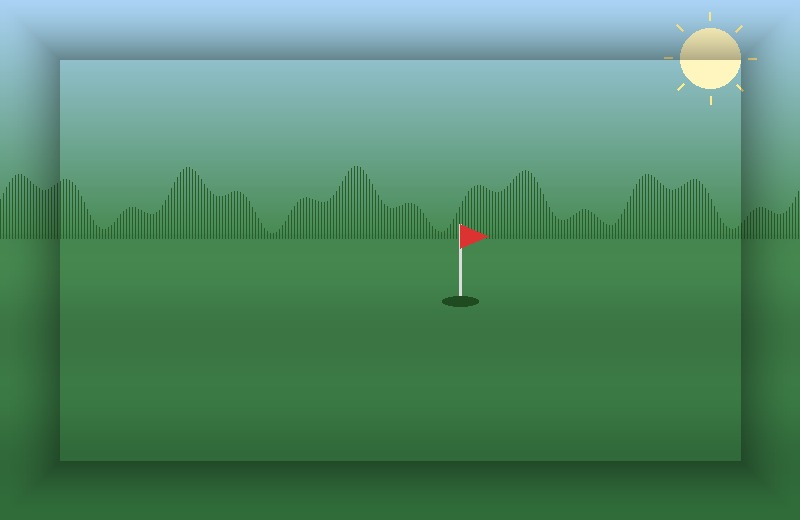
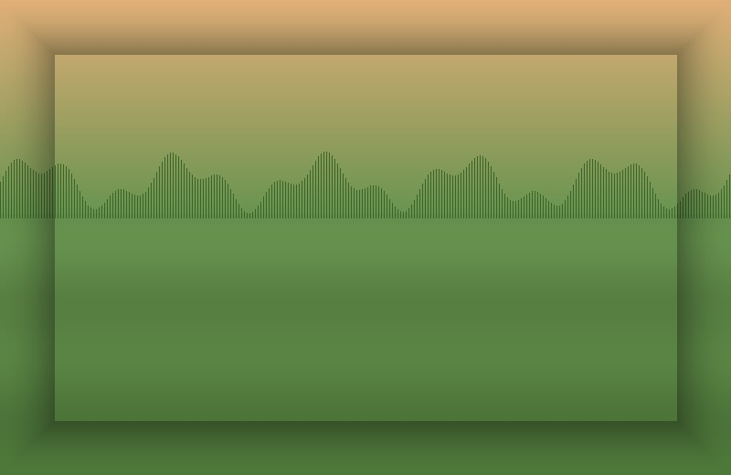

Track runder live
Indtast scores hul for hul, eller importér efter runden. Putts, fairways, greens — alt logges automatisk.
Track dine runder, følg dine venner og del de bedste øjeblikke fra banen. Golf Social henter dit handicap automatisk fra Dansk Golf Union — så du kan fokusere på næste swing.
Fra første tee-time til 19. hul — Golf Social samler dine runder, dine venner og dit handicap ét sted.
Indtast scores hul for hul, eller importér efter runden. Putts, fairways, greens — alt logges automatisk.
Forbind med Dansk Golf Union, og dit officielle handicap synkroniseres automatisk efter hver godkendt runde.
Se hvem der spiller, hvor de spiller og hvordan det gik. Reager, kommenter og pep hinanden op til næste runde.
Saml klubvennerne i private grupper. Tag billeder, send beskeder og koordinér tee-times direkte i appen.
Broke 80 for første gang? Tre birdies i træk? Golf Social fanger og fejrer milepælene automatisk.
Find mønstre i dit spil: greens-in-regulation, scoring averages, performance pr. bane. Bliv klogere på dit eget spil.

Kronologisk, simpelt og fyldt med dine venners runder. Ingen reklamer, ingen tilfældige influencers — bare folk du faktisk spiller med.

Stableford eller slag. 9 eller 18. Indtast på under et sekund pr. hul, og lad appen klare resten. Når runden er færdig, indrapporteres scoren til DGU automatisk.
Opret grupper for golfholdet, makkerturen eller herredagen. Send beskeder, planlæg runder og se gruppens samlede form på ét overblik.
Hent appen, forbind med DGU, og inviter dine venner. Det er det.
Ingen lange formularer. Et tap, og du er inde.
Vi henter dit handicap og dine sidste 20 runder automatisk.
Find dine kontakter eller del et link. Feedet fyldes med det samme.
"Endelig et sted hvor jeg kan se alle mine venners runder uden at scrolle gennem en masse hund- og kattebilleder."
"DGU-synkroniseringen alene er pengene værd. Jeg behøver aldrig at indtaste en score to gange igen."
"Vores herredagsgruppe har aldrig været mere aktiv. Vi har næsten skrottet vores Facebook-gruppe."
Ja. Hele appens kerne — feed, runder, venner, grupper og DGU-sync — er 100% gratis. Vi har en valgfri Pro-plan undervejs til avanceret statistik.
Du logger ind med dit DGU-medlemsnummer i appen. Vi henter dit handicap og dine sidste 20 godkendte runder, og opdaterer automatisk efter hver ny runde.
iOS 16+ og Android 12+. En tablet- og webversion er på vej.
Du bestemmer. Du kan dele runder offentligt med dine venner, kun i private grupper, eller helt privat for dig selv.
Vi henter automatisk runder fra DGU. Import fra GolfBox og Trackman kommer i en kommende opdatering.
Nej. Vi sælger ikke dine data, og vi viser ikke reklamer i appen. Læs mere i vores privatlivspolitik.
Hent Golf Social og inviter dine golfvenner. Vi sender en notifikation, når den nye sæson starter.